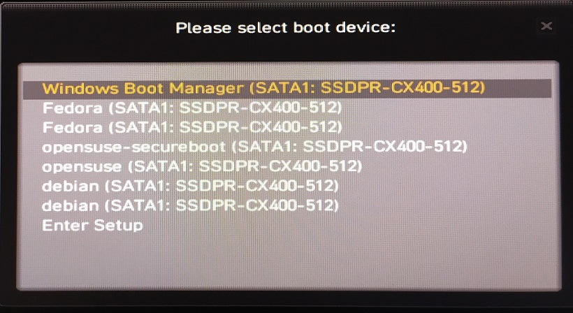
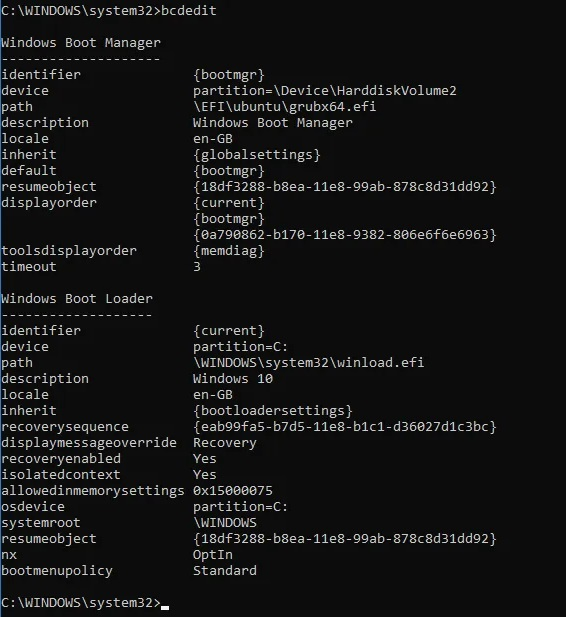
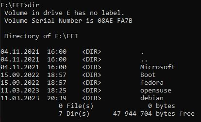
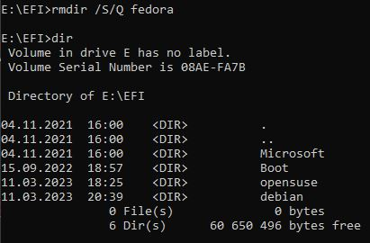

Gewähren des Zugriffs zur EFI-Partition ist nicht unbedingt aufrichtig auf einer Windows 10 Maschine und mein Grund um das zu machen war mit Linuxdistro Hüpfen Zussamenhang stehen, was machte die Partition voll und resultierte schließlich ein Fehler, wenn ich nächster Linux-Distribution zu installieren versuchte.
Beim einigen Moment die BIOS-Bootsequenz sah so aus wie unten, obwohl zwei der Linux-Distributionen schon nicht existierte:

Es ist auch erwähnenswert, dass eine ähnliche Situation in Windows BCD (Boot Configuration Data - Boot-Konfigurationsdaten) passieren kann, wenn wir Linux in dem Dual Boot Mode installieren, sodass ein Eintritt zum Windows Boot Manager hinzugefügt wird. Wir können den BCD mit dem
bcdedit Befehl in das cmd oder PS, jedoch die Löschung des Eintritts wird nicht viel Raum machen, aber ich wollte die unnötige Einträge entfernen. Die Datei ist unten
\EFI\Microsoft\Boot gespeichert.

Der Versuch um die EFI Partition zu Windows 10 als ein standard Benutzer selbst mit administrativen Rechten zu mounten, kann knifflig sein, also gibt es einige Schritte zu tun, zu einkommen:
- In dem cmd tippen und started wir diskpart als die Datenträgerverwaltung, die EFI Partition uns nicht lassen wird.
- Wir geben list volume ein und bestimmen, welches die EFI Partition ist, in meiner Sache war es "Volume 2", 100MB groß, nicht gemountet, formatiert als FAT32-Dateisystem und mit der "System" Info.
- Als nächste wählen wir sie aus, durch die select volume 2 Ausführung.
- Dann mounten wir sie mit assign letter = e (oder mit einem anderen freien Buchstabe).
Nochmals, als normaler Benutzer, werden wir sie durch den Windows-Explorer nicht zugreifen, also empfehle ich in cmd zu bleiben und wenn es mit keinen administrativen Rechten ausgeführt wurde, starten Sie es bitte mit diesen neu. Wir bewegen zum EFI-Ordner und nach dem Inhalt auflisten, können wir gleiche Sachen sehen, wie auf dem ersten Bildschirmausdruck sind:

Jetzt können wir die unbedingte Verzeichnisen mit ihrem Inhalt löschen, um den Raum zu machen mit dem
rmdir /S/Q Befehl, der korrekte Optionen hat, um die Verzeichnisen recursiv und ruhig entfernen, ohne die zusätzliche Bestätigung.
